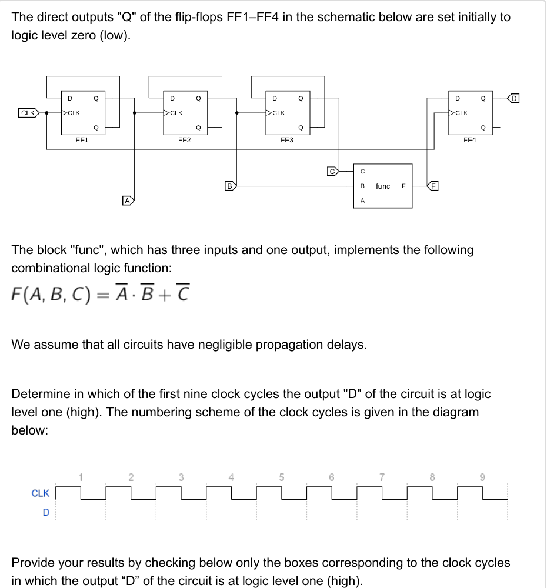
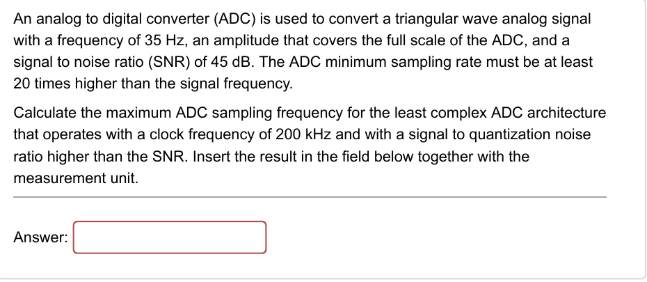
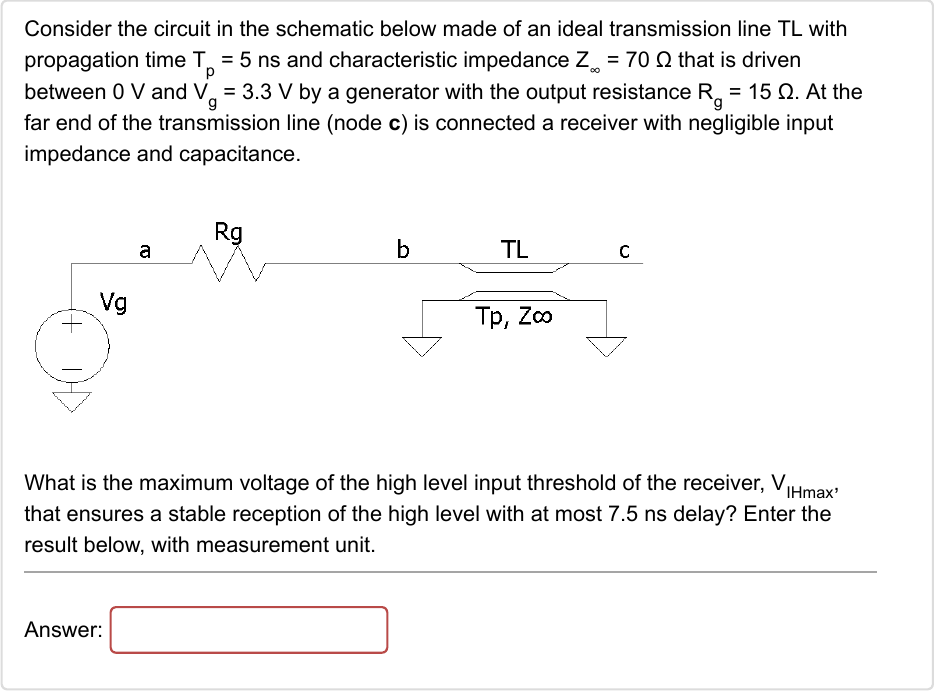
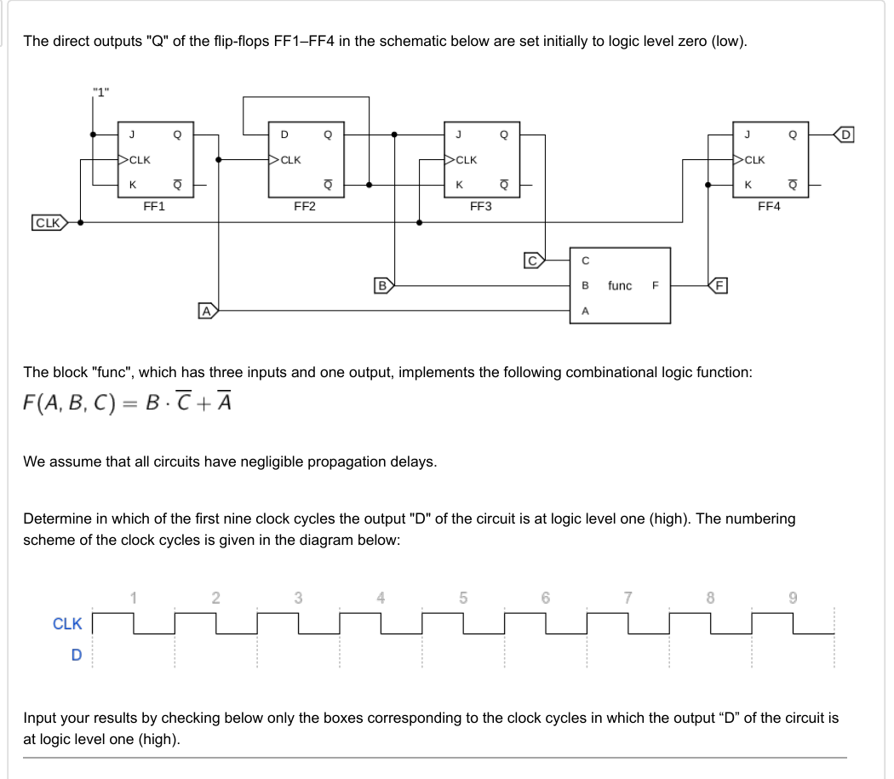
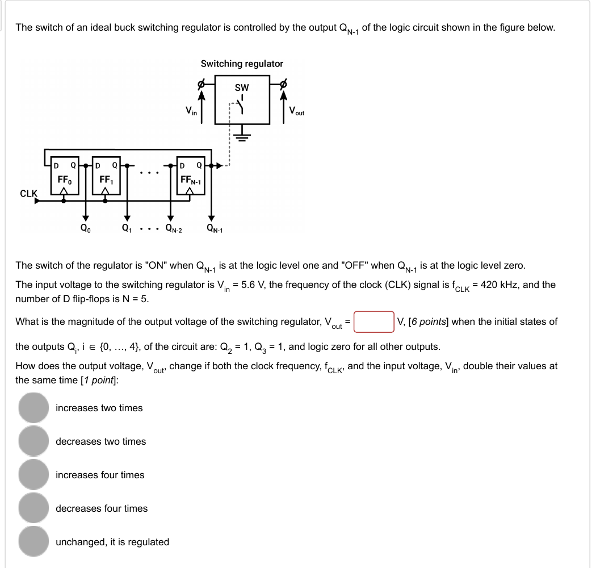
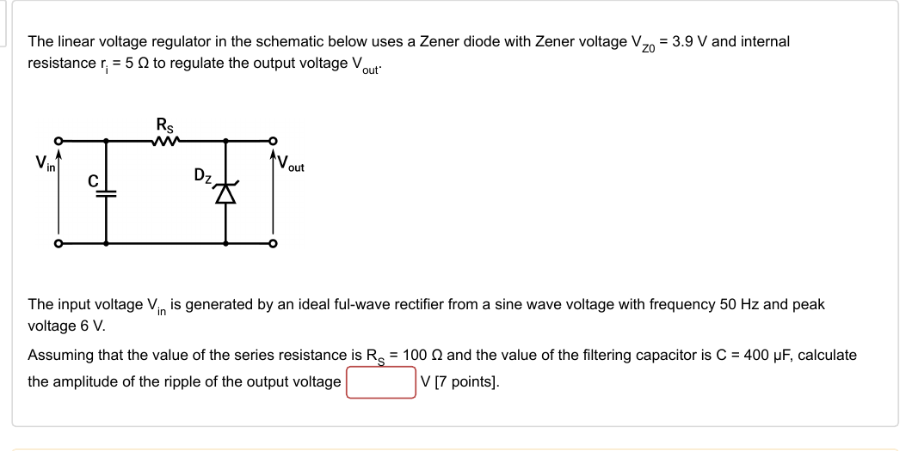
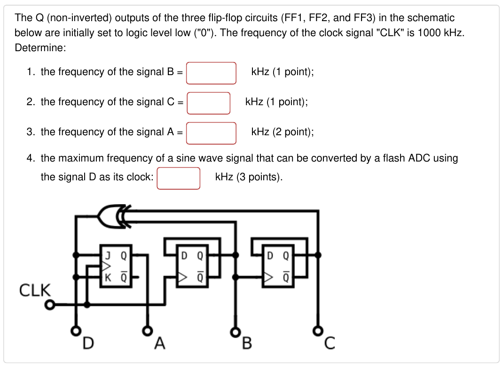
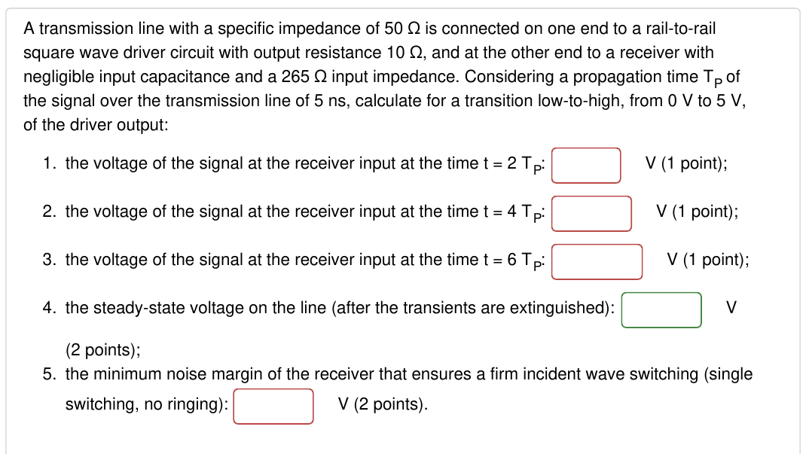
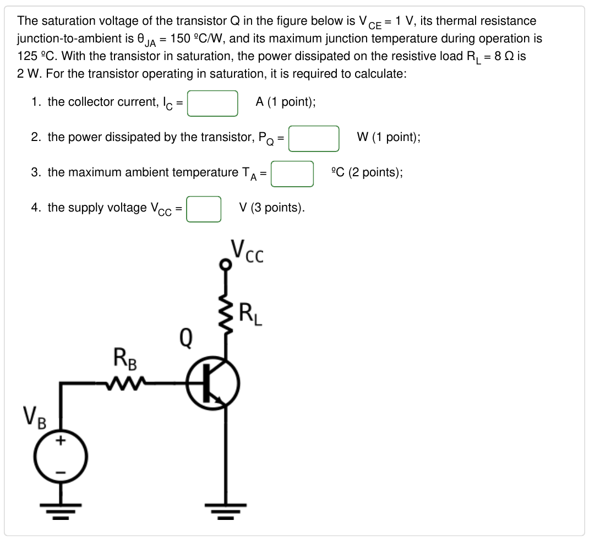

44. To'liq imtihonlar: 2020-yil (iyul, sentyabr, dekabr)
Imtihon 2020-07 (10-iyul)
1-masala: flip-flop lar va "func" bloki, 7 ball

Tarjima: FF1–FF4 ning Q chiqishlari boshida 0. "func" bloki F(A, B, C) = Ā·B̄ + C̄ funksiyasini bajaradi. Kechikishlar yo'q. Birinchi 9 ta takt siklining qaysilarida D chiqishi 1 bo'ladi?
Yechim
- Sxemani o'qing: FF1, FF2, FF3 da D = Q̄ (har frontda almashadi). FF1 takti CLK, FF2 takti Q1, FF3 takti Q2. Bu 3 bitli asinxron pastga sanovchi hisoblagich: A = Q1, B = Q2, C = Q3.
- FF4: D-kirish = F, takti CLK. Demak D chiqishi F ni bir takt kechiktirib takrorlaydi.
- Jadval (har taktdagi qiymatlar):
| Takt | C B A | F = Ā·B̄ + C̄ | D (= oldingi F) |
|---|---|---|---|
| 0 (boshlanish) | 000 | 1 | 0 |
| 1 | 111 | 0 | 1 |
| 2 | 110 | 0 | 0 |
| 3 | 101 | 0 | 0 |
| 4 | 100 | 1 | 0 |
| 5 | 011 | 1 | 1 |
| 6 | 010 | 1 | 1 |
| 7 | 001 | 1 | 1 |
| 8 | 000 | 1 | 1 |
| 9 | 111 | 0 | 1 |
Javob: D = 1 bo'lgan taktlar 1, 5, 6, 7, 8, 9. Tuzoq: 1-taktdagi D boshlang'ich holatdagi F = 1 dan keladi. (9-dars)
2-masala: eng sodda ADC ning namuna olish chastotasi, 7 ball

Tarjima: 35 Hz li uchburchak signal ADC ning to'liq shkalasini egallaydi, signalning SNR i 45 dB. Namuna olish chastotasi signal chastotasidan kamida 20 marta katta bo'lishi kerak. 200 kHz takt bilan ishlaydigan, kvantlash SNR i 45 dB dan yuqori bo'lgan eng sodda ADC ning maksimal namuna olish chastotasini toping.
Yechim
- Uchburchak (yoki arra) to'lqin to'liq shkalada: SNRq = 6.02·N dB (sinusda 6.02N + 1.76 bo'lardi). 6N > 45 → N > 7.5 → N = 8 bit.
- Eng sodda ADC bu tracking ADC (bitta komparator va hisoblagich). Eng yomon holatda u 2N = 256 takt sarflaydi.
- fs = 200 kHz / 256 = 781.25 Hz.
- Tekshirish: 20 · 35 = 700 Hz < 781.25 Hz. Shart bajarildi.
3-masala: uzatish liniyasi, VIH max, 7 ball

Tarjima: liniya: Tp = 5 ns, Z∞ = 70 Ω. Generator 0 → 3.3 V, Rg = 15 Ω. Uzoq uchida qabul qilgich (amalda ochiq uch). Yuqori sath ko'pi bilan 7.5 ns kechikish bilan barqaror qabul qilinishi uchun VIH eng ko'pi bilan qancha bo'lishi mumkin?
Yechim
- Boshlang'ich to'lqin: U = 3.3 · 70/(15 + 70) = 2.72 V.
- Aks etish koeffitsientlari: ΓT = +1 (ochiq uch), ΓG = (15 − 70)/(15 + 70) = −0.647.
- 7.5 ns < 2Tp = 10 ns, demak signal birinchi to'lqinda (t = Tp = 5 ns) qabul qilinishi kerak: IWS.
- t = Tp: v = (1 + 1)·2.72 = 5.44 V. t = 3Tp: generatordan manfiy aks etish keladi: v = (1 + ΓT + ΓTΓG + ΓT²ΓG)·U = (2 − 2·0.647)·2.72 = 1.92 V.
- "Barqaror" degani: keyingi to'lqinlarda kuchlanish chegaradan qaytib pastga tushmasligi kerak. Eng past nuqta 1.92 V (keyingi tebranishlar so'nadi), demak VIH,max = 1.92 V.
Imtihon 2020-09 (2-sentyabr)
1-masala: JK va D flip-flop lar, 7 ball

Tarjima: FF1–FF4 boshida 0. "func" F(A, B, C) = B·C̄ + Ā. Kechikishlar yo'q. Birinchi 9 taktning qaysilarida D = 1?
Yechim
- FF1 (JK, J = K = 1, takt CLK): A har frontda almashadi.
- FF2 (D = Q̄, takti A): B har safar A 0 → 1 bo'lganda almashadi, ya'ni har 2 taktda.
- FF3 (JK, J = B, K = B̄, takt CLK): C = B ning bir takt kechikkan nusxasi.
- FF4 (JK, J = K = F, takt CLK): oldingi taktda F = 1 bo'lsa D almashadi, F = 0 bo'lsa saqlanadi.
| Takt | A | B | C | F = B·C̄ + Ā | D |
|---|---|---|---|---|---|
| 0 | 0 | 0 | 0 | 1 | 0 |
| 1 | 1 | 1 | 0 | 1 | 1 |
| 2 | 0 | 1 | 1 | 1 | 0 |
| 3 | 1 | 0 | 1 | 0 | 1 |
| 4 | 0 | 0 | 0 | 1 | 1 |
| 5 | 1 | 1 | 0 | 1 | 0 |
| 6 | 0 | 1 | 1 | 1 | 1 |
| 7 | 1 | 0 | 1 | 0 | 0 |
| 8 | 0 | 0 | 0 | 1 | 0 |
| 9 | 1 | 1 | 0 | 1 | 1 |
D ustuni: D(yangi) = D(oldingi) XOR F(oldingi). Javob: 1, 3, 4, 6, 9. (11-dars)
2-masala: siljitish registri boshqaradigan buck, 7 ball

Tarjima: ideal buck regulatorning kaliti QN−1 = 1 bo'lganda yoqiq. Vin = 5.6 V, fCLK = 420 kHz, N = 5 ta D flip-flop. Boshida Q2 = Q3 = 1, qolganlari 0. Vout qancha? fCLK va Vin bir vaqtda ikki baravar oshsa Vout qanday o'zgaradi?
Yechim
- FF lar halqa siljitish registri: oxirgi chiqish QN−1 yana birinchi FF ga kiradi. Ikkita "1" abadiy aylanib yuradi.
- Davr = N = 5 takt, shundan 2 taktda QN−1 = 1. Duty cycle D = 2/5 = 0.4.
- Buck: Vout = D · Vin = 0.4 · 5.6 = 2.24 V.
- Vout chastotaga bog'liq emas, faqat D va Vin ga. Vin ×2 → Vout increases two times. "Regulated" varianti tuzoq: bu sxemada teskari aloqa yo'q, D o'zgarmas.
3-masala: zener stabilizator chiqishidagi ripple, 7 ball

Tarjima: zener: VZ0 = 3.9 V, ichki qarshiligi ri = 5 Ω. Vin ideal ikki yarim davrli to'g'rilagichdan (50 Hz, cho'qqi 6 V). RS = 100 Ω, C = 400 µF. Chiqishdagi ripple amplitudasini toping.
Yechim
- Kondensatordan olinadigan tok (taxminan o'zgarmas): IS = (6 − 3.9)/100 = 21 mA.
- Ikki yarim davrli: Δt = 1/(2·50) = 10 ms. Kirish ripple: VR,in = I·Δt/C = 0.021 · 0.01 / 0.0004 = 0.53 V.
- Ripple uchun zener bu ri qarshilik. RS va ri kuchlanish bo'lgichi hosil qiladi: VR,out = 0.53 · 5/(100 + 5) = 0.025 V (25 mV).
Ma'nosi: stabilizator ripple ni 0.53 V dan 25 mV gacha, ya'ni ~21 marta kamaytirdi. (31-dars, 32-dars)
Imtihon 2020-12 (4-dekabr)
Yechim faylida 1, 2 va 4-savollar bor (3-savol faylda yo'q).
1-masala: hisoblagich va XOR, 7 ball

Tarjima: CLK = 1000 kHz, hamma Q boshida 0. Toping: B, C, A ning chastotalari va D takt bo'lib xizmat qiladigan flash ADC o'zgartira oladigan sinusning maksimal chastotasi.
Yechim
- FF2 va FF3 ikki bitli asinxron hisoblagich: (C B) = 00 → 01 → 10 → 11 → 00. B har taktda almashadi → 500 kHz. C undan ikki baravar sekin → 250 kHz.
- D = B XOR C: 0, 1, 1, 0, 0, 1, 1, 0… Davri 4 takt → 250 kHz.
- FF1 (JK, J = K = D, takt CLK): D = 1 bo'lgan har frontda almashadi. A: 0 → 1 → 0 → 0 → 0 → 1 → 0 → 0… Davri 4 takt → 250 kHz.
- ADC takti D = 250 kHz → Nyquist: sinus ≤ 250/2 = 125 kHz.
2021-01 dagi masalaning egizagi (u yerda NOR edi). (9-dars)
2-masala: aks etishlar, lattice diagramma, 7 ball

Tarjima: Z∞ = 50 Ω, drayver RG = 10 Ω, qabul qilgich RT = 265 Ω, TP = 5 ns, o'tish 0 → 5 V. Qabul qilgichdagi kuchlanishni t = 2TP, 4TP, 6TP da, barqaror kuchlanishni va IWS uchun kerakli minimal shovqin zaxirasini toping.
Yechim
- U = 5 · 50/(10 + 50) = 4.17 V. ΓG = (10 − 50)/60 = −0.67. ΓT = (265 − 50)/315 = +0.68.
- Qabul qilgichdagi kuchlanish faqat TP, 3TP, 5TP da o'zgaradi, 2TP, 4TP, 6TP da oldingi qiymat saqlanadi.
- 2TP (= TP dagi qiymat): (1 + 0.68) · 4.17 = 7.01 V.
- 4TP: [1 + ΓT + ΓTΓG + ΓT²ΓG]·U = [1 + 0.68 − 0.456 − 0.310]·4.17 = 3.82 V.
- 6TP: yana ikki had qo'shiladi: + ΓT²ΓG² + ΓT³ΓG² = + 0.208 + 0.141 → 5.27 V.
- Barqaror holat: rezistorlar bo'lgichi, Z∞ yo'q: 5 · 265/(10 + 265) = 4.82 V.
- IWS: birinchi to'lqindan keyin kuchlanish eng pastga 3.82 V gacha tushadi. Bu ham "1" deb o'qilishi kerak, demak VIH ≤ 3.82 V va zaxira 5 − 3.82 = 1.18 V.
4-masala: tranzistor kalit va issiqlik, 7 ball

Tarjima: to'yingan tranzistorda VCE = 1 V, θJA = 150 °C/W, TJ,max = 125 °C. RL = 8 Ω yuklamada 2 W quvvat. Toping: IC, tranzistordagi quvvat PQ, maksimal atrof harorati TA, VCC.
Yechim
- P = I²·R → IC = √(2/8) = 0.5 A.
- PQ = VCE · IC = 1 · 0.5 = 0.5 W.
- Qizish: 150 · 0.5 = 75 °C. TA + 75 ≤ 125 → TA ≤ 50 °C.
- VCC = I·RL + VCE = 0.5 · 8 + 1 = 5 V.
(30-dars)
Javoblar jadvali
| Imtihon | Masala | Javob | Dars |
|---|---|---|---|
| 2020-07 | 1 | 1, 5, 6, 7, 8, 9 | 9 |
| 2020-07 | 2 | 781.25 Hz | 18 |
| 2020-07 | 3 | 1.92 V | 26 |
| 2020-09 | 1 | 1, 3, 4, 6, 9 | 11 |
| 2020-09 | 2 | 2.24 V; increases two times | 33 |
| 2020-09 | 3 | 0.025 V | 32 |
| 2020-12 | 1 | 500; 250; 250; 125 kHz | 9 |
| 2020-12 | 2 | 7.01; 3.82; 5.27; 4.82; 1.18 V | 25 |
| 2020-12 | 4 | 0.5 A; 0.5 W; 50 °C; 5 V | 30 |
📝 Konspekt
- FF jadvali: har taktda avval A, B, C ni, keyin F ni, keyin keyingi taktdagi D ni yozing.
- Qabul qilgich kuchlanishi faqat toq TP larda o'zgaradi; juft TP da saqlanadi.
- IWS zaxirasi = VOH − (birinchi to'lqindan keyingi eng past kuchlanish).